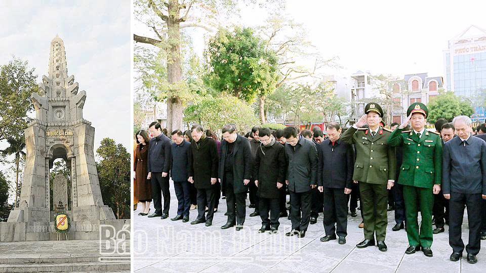
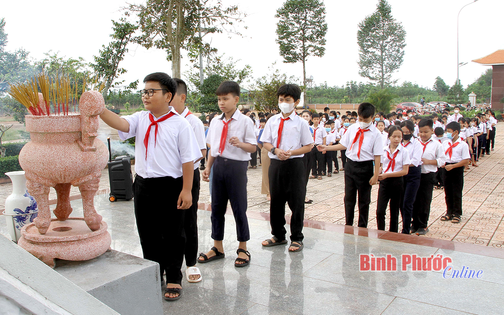
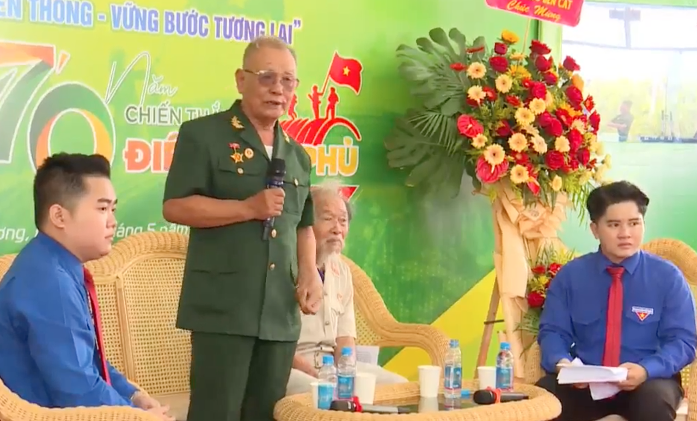
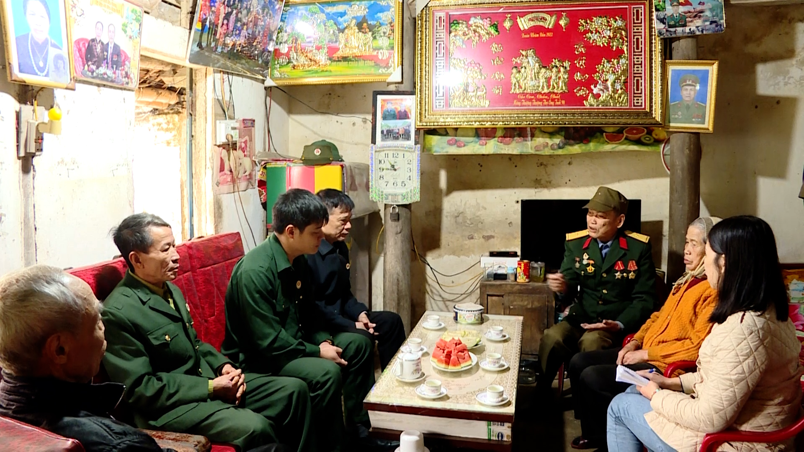
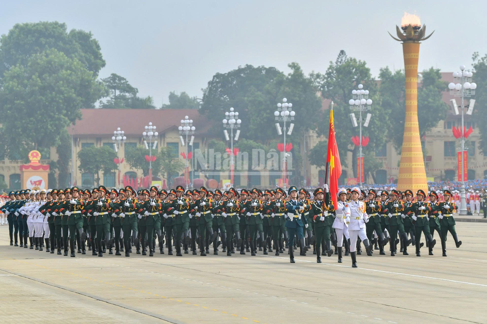
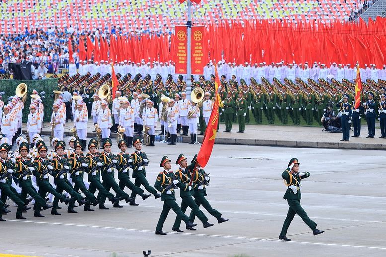
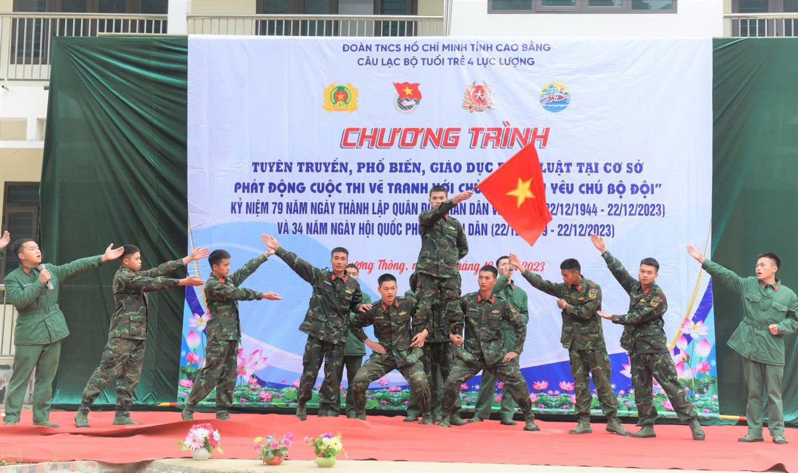
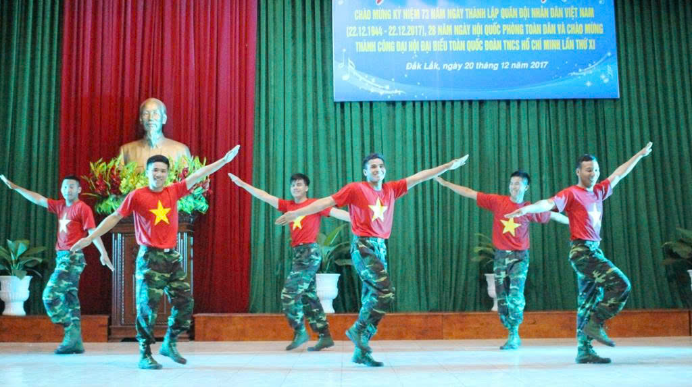
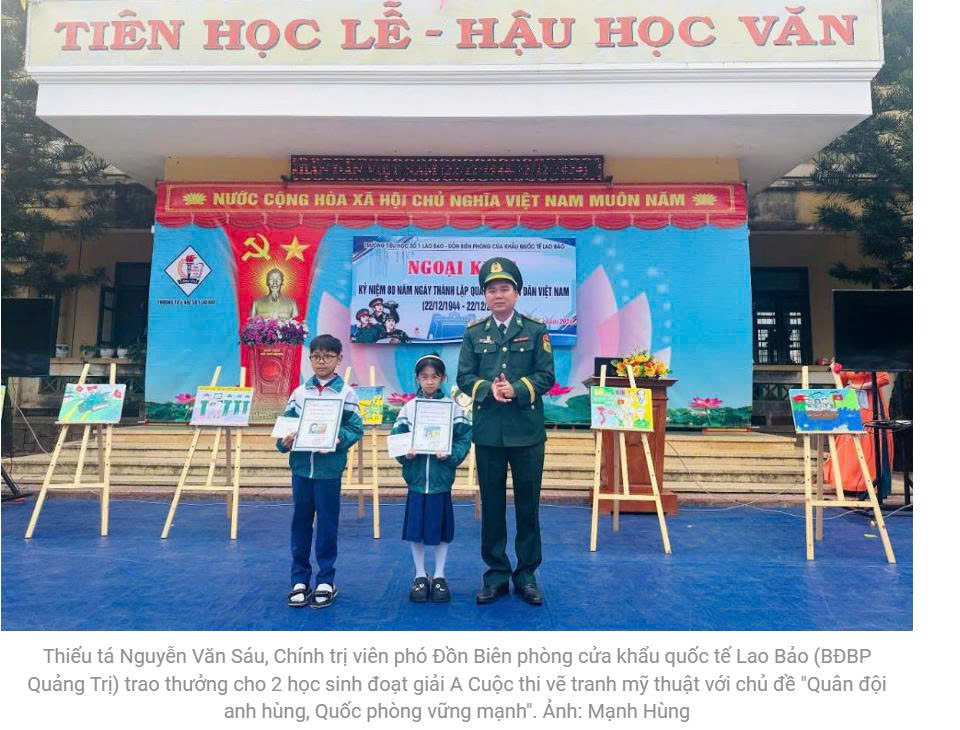
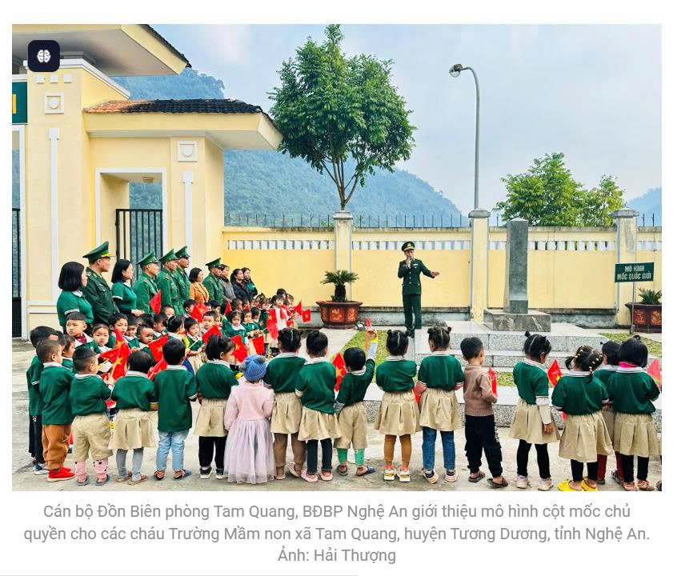

HOẠT ĐỘNG TƯỞNG NHỚ NGÀY 22/12
Hằng năm, nhân dịp kỷ niệm Ngày Quân đội Nhân dân Việt Nam 22/12, nhiều hoạt động ý nghĩa được tổ chức nhằm tri ân các anh hùng liệt sĩ, thương binh, cựu chiến binh và lực lượng bộ đội đang làm nhiệm vụ. Đây là dịp để thế hệ trẻ thể hiện lòng biết ơn, gìn giữ và phát huy truyền thống “Uống nước nhớ nguồn” của dân tộc.
1. Lễ dâng hương và viếng nghĩa trang liệt sĩ
Các cơ quan, trường học và địa phương thường tổ chức lễ viếng nghĩa trang, thắp hương tưởng niệm các anh hùng liệt sĩ. Hoạt động này thể hiện lòng tri ân sâu sắc đối với những người đã hi sinh vì độc lập, tự do của Tổ quốc.


2. Giao lưu, gặp gỡ cựu chiến binh
Nhiều buổi gặp mặt, trò chuyện cùng các cựu chiến binh được tổ chức nhằm giúp thế hệ trẻ hiểu hơn về truyền thống anh hùng, tinh thần chiến đấu quả cảm của quân đội ta trong suốt các thời kỳ lịch sử.


3. Diễu binh, diễu hành
Mỗi bước đi, mỗi đội hình là sự tiếp nối tinh thần của các thế hệ bộ đội Cụ Hồ đã chiến đấu, hy sinh vì đất nước. Nó mang giá trị tri ân rất lớn.Qua hoạt động diễu binh, diễu hành, mọi người – đặc biệt là học sinh, sinh viên – được nhắc nhớ về trách nhiệm bảo vệ Tổ quốc, góp phần bồi dưỡng tinh thần yêu nước.


4. Tổ chức mít-tinh và chương trình văn nghệ
Nhiều đơn vị, trường học tổ chức mít-tinh, biểu diễn văn nghệ chủ đề “Uống nước nhớ nguồn”, “Tự hào Quân đội Nhân dân Việt Nam” để ôn lại truyền thống vẻ vang của quân đội ta.


5. Hoạt động tuyên truyền và giáo dục truyền thống
Các bài báo, video, triển lãm ảnh, hoạt động ngoại khóa được tổ chức nhằm giúp học sinh và nhân dân hiểu rõ hơn về lịch sử hình thành, vai trò và những chiến công oanh liệt của Quân đội Nhân dân Việt Nam.


Những hoạt động này không chỉ thể hiện lòng biết ơn mà còn góp phần giáo dục thế hệ trẻ về trách nhiệm bảo vệ Tổ quốc, xây dựng đất nước ngày càng giàu đẹp, vững mạnh.